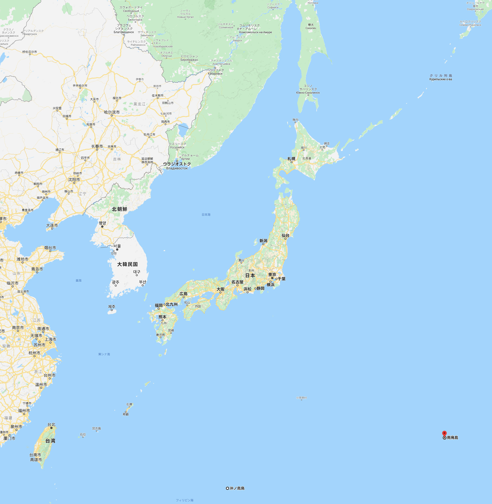
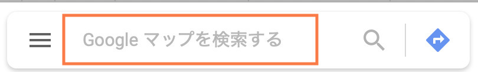
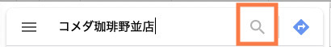
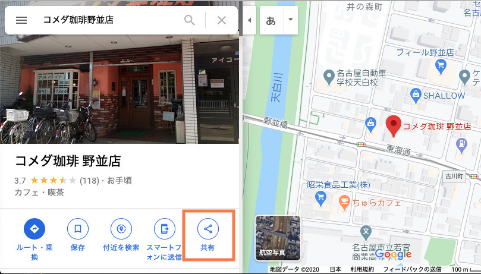
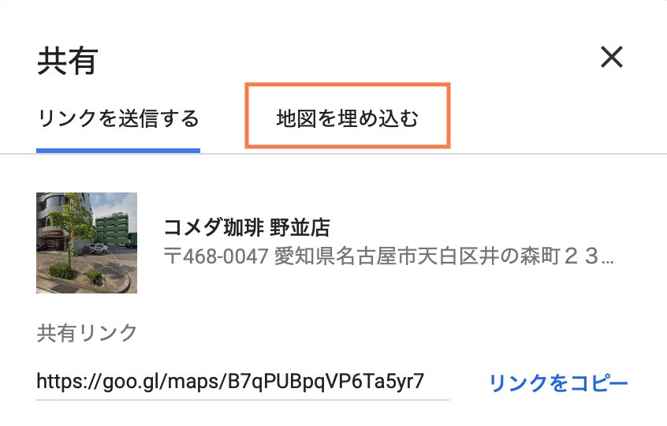
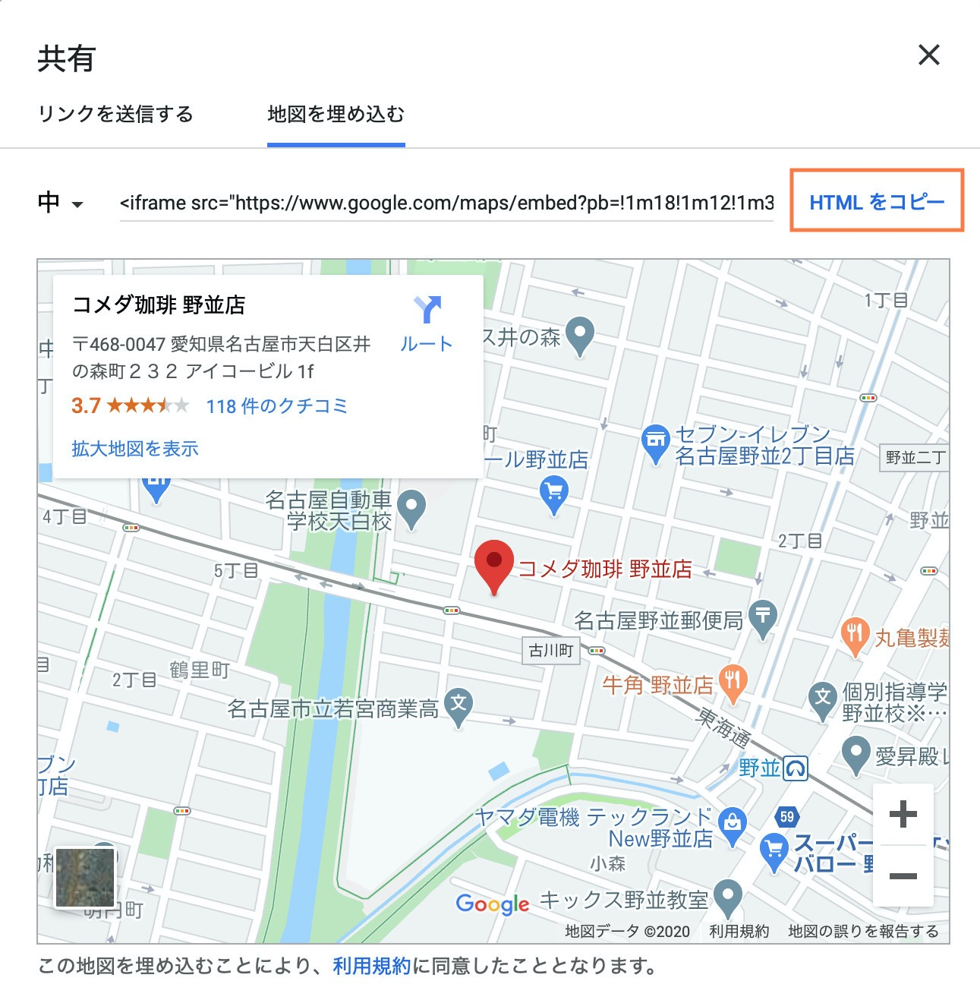

地図を埋め込む

Webサイトを作っていく際に、自社への案内地図などを載せたい場面は多々あると思います。
ここでは、地図表示に良く使われている Google Map を、自分のWebサイトで使う方法をご紹介します。
案内地図の作成例
<!DOCTYPE html>
<html>
<head>
<meta charset="utf-8">
<meta name="viewport"
content="width=device-width, initial-scale=1">
<link rel="stylesheet" href="style.css">
</head>
<body>
<h1>案内地図</h1>
<div class="map">
<div class="inner">
<iframe src="https://www.google.com/maps/embed?pb=!1m18!1m12!1m3!1d3264.098229592375!2d136.94909095223227!3d35.10425798023631!2m3!1f0!2f0!3f0!3m2!1i1024!2i768!4f13.1!3m3!1m2!1s0x60037b0d5843e2af%3A0x282e3c573e3f00d8!2z44Kz44Oh44OA54-I55CyIOmHjuS4puW6lw!5e0!3m2!1sja!2sjp!4v1592795030975!5m2!1sja!2sjp" style="border:0;"></iframe>
</div>
</div>
</body>
</html>.map {
box-sizing: border-box;
width: 100%;
}
.map .inner {
overflow: hidden;
position: relative;
padding-top: 150%;
}
@media (min-width: 768px) {
.map .inner {
padding-top: calc(100% * 9 / 16);
}
}
.map .inner iframe {
position: absolute;
top: 0;
left: 0;
width: 100%;
height: 100%;
}- Google Map を開きます。 
- 左上の検索窓に、調べたい場所名や住所を入力します。 
- ここでは、「コメダ珈琲野並店」と入力し、虫眼鏡ボタンを押します。 
- コメダ珈琲 野並店が表示されました。 埋め込むために必要なデータを表示させたいので、右下の「共有」ボタンを押します。 
- ここでは自分のWebサイトの中にGoogle Mapを埋め込みたいので、「地図を埋め込む」をクリックします。 
- 「HTMLをコピー」をクリックして、Atomに貼り付けます。 
- コピーしたhtmlには不要な部分もあるので、必要な部分だけを残して完成です。